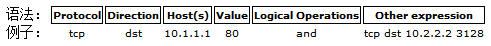

一、Introduction
书名Wireshark数据包分析实战第二版译者是诸葛建伟老师orz,有很多一部分讲协议分析的，这里主要记录一下Wireshark工具的使用，捕捉和显示过滤器的规则。
Wireshark官方文档
二、整本书概括

三、监听网络线路
1.混杂模式是从网络线路上查看所有流量的模式，即使流量不是发给本机的。正常的情况可以收到arp协议发送的广播包。
2.在集线器连接的网络中嗅探可以看到所有的流量，但是同一时刻只有一个设备可以通信，现在不常见，经常会产生冲突。
3.在交换式网络中嗅探：（正常的可视范围是本机数据包和广播数据包）
四、一些基本操作
1.主界面：packet list、packet details、packet bytes
2.设置首选项：edit->preferences
3.着色规则：view->coloring rules 可以使用明显的颜色来标记关注的流量
4.查找：ctrl+F （Ctrl+B/N 前后切换）
5.标记：Ctrl+M （Shift+Ctrl+B/N 前后切换）
五、高级特性
1.查看端点、会话信息 Statistics->endpoints/conversations
2.查看协议分布情况、占的比重 Statistics->Protocol Hierarchy
3.名字解析即一个用来将其地址转化成名字的协议，可能会失败，会带来额外的开销，额外的流量，每次打开一个捕获文件就要重新解析一次。
4.协议解析即将原始的比特流翻译成wireshark程序识别的协议并显示出来。比如员工用了443端口来传输ftp流量，wireshark会以ssl解析器来显示。这时，可以强制更换解析器：右键，decode as。可以查看解析器的源码来了解解析的过程，安装程序目录：epan/dissectors/。
5.跟踪TCP流可以将TCP流重组成易读的形式。
6.查看数据包的长度可以了解到是控制流量比较多还是上传下载的流量比较多。
7.图形显示：
IO图IO Graph：看系统某时刻的吞吐量，看不同协议的流量传输的时间走势。
双向时间图TCP->Round Trip Time：显示某个数据包一个RTT占用的时间，用来找到通信中的瓶颈。
数据流图Flow Graph：将ip端口之间的交流可视化，比如可以直观的展示TCP三次握手。
8.专家信息：可以用来统计数据包中某些特定状态的警告。如：tcp重传输，重复ack等。
六、两种过滤器
捕捉过滤器（CaptureFilters）：用于决定将什么样的信息记录在捕捉结果中。需要在开始捕捉前设置。
显示过滤器（DisplayFilters）：在捕捉结果中进行详细查找。他们可以在得到捕捉结果后随意修改。
捕捉过滤器

Protocol（协议）:
可能的值: ether, fddi, ip, arp, rarp, decnet, lat, sca, moprc, mopdl, tcp and udp.
如果没有特别指明是什么协议，则默认使用所有支持的协议。
Direction（方向）:
可能的值: src, dst, src and dst, src or dst
如果没有特别指明来源或目的地，则默认使用 “src or dst” 作为关键字。
例如，”host 10.2.2.2″与”src or dst host 10.2.2.2″是一样的。
Host(s):
可能的值： net, port, host, portrange.
如果没有指定此值，则默认使用”host”关键字。
例如，”src 10.1.1.1″与”src host 10.1.1.1″相同。
Logical Operations（逻辑运算）:
可能的值：not, and, or.
否(“not”)具有最高的优先级。或(“or”)和与(“and”)具有相同的优先级，运算时从左至右进行。
例子：
tcp dst port 3128 //捕捉目的TCP端口为3128的封包。
ip src host 10.1.1.1 //捕捉来源IP地址为10.1.1.1的封包。
host 10.1.2.3 //捕捉目的或来源IP地址为10.1.2.3的封包。
ether host e0-05-c5-44-b1-3c //捕捉目的或来源MAC地址为e0-05-c5-44-b1-3c的封包。如果你想抓本机与所有外网通讯的数据包时，可以将这里的mac地址换成路由的mac地址即可。
src portrange 2000-2500 //捕捉来源为UDP或TCP，并且端口号在2000至2500范围内的封包。
not imcp //显示除了icmp以外的所有封包。（icmp通常被ping工具使用）
src host 10.7.2.12 and not dst net 10.200.0.0/16 //显示来源IP地址为10.7.2.12，但目的地不是10.200.0.0/16的封包。
(src host 10.4.1.12 or src net 10.6.0.0/16) and tcp dst portrange 200-10000 and dst net 10.0.0.0/8 //捕捉来源IP为10.4.1.12或者来源网络为10.6.0.0/16，目的地TCP端口号在200至10000之间，并且目的位于网络 10.0.0.0/8内的所有封包。
src net 192.168.0.0/24
src net 192.168.0.0 mask 255.255.255.0 //捕捉源地址为192.168.0.0网络内的所有封包。显示过滤器
例子：
snmp || dns || icmp //显示SNMP或DNS或ICMP封包。
ip.addr == 10.1.1.1 //显示来源或目的IP地址为10.1.1.1的封包。
ip.src != 10.1.2.3 or ip.dst != 10.4.5.6 //显示来源不为10.1.2.3或者目的不为10.4.5.6的封包。
ip.src != 10.1.2.3 and ip.dst != 10.4.5.6 //显示来源不为10.1.2.3并且目的IP不为10.4.5.6的封包。
tcp.port == 25 //显示来源或目的TCP端口号为25的封包。
tcp.dstport == 25 //显示目的TCP端口号为25的封包。
tcp.flags //显示包含TCP标志的封包。
tcp.flags.syn == 0×02 //显示包含TCP SYN标志的封包。